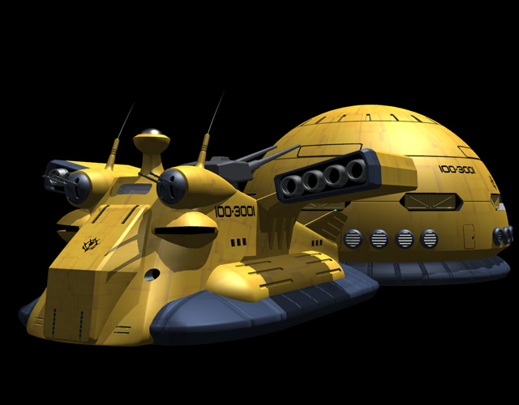

| Gallop High Mobility Zeon Duchy Light Land Cruiser |
|
|  | |
General and Technical Data |
|
|
Unit type: land battleship Operator: Zeon Duchy Dimensions: length 48.0 meters, width 44.7 meters Propulsion system: 8 x jet engine Hangar capacity: 1 infantry, 2 mobile suits, 2 mobile suits in detachable hangar Launch catapults: 0 Fixed armaments: 2 x 2-barrel heavy machinegun; 2-barrel main cannon turret Gallop Independant Sections |
 RPG quick stats sheet
RPG quick stats sheet | Technical and Historical Notes | |
|
In order to facilitate heavy fire support in the land theatre following Operation British, Zeon forces began designing a heavy weapons platform that would later evolve into the land battleship.
Earlier successes with the Dobay-class gave the Zeon an excellent heavy attack unit as well as a useful frontline command unit. However, its low mobility did not allow for rapid deployment or quick assaults. It was also as a loss compared to the Federation's Big Tray, which could cross water due to its use of an air cushion. Zeon engineers sought out to develop a new land battleship that would correct these flaws. The Gallop is much smaller than the Dobay, and is probably more deserving of the title "land cruiser" than anything else. It uses an air cushion much as the Big Tray, however, its main propulsion is provided by eight jet engines on external pylons, providing it with great speed and high acceleration. It trades these off for a light armament, however. Two heavy machineguns are mounted at the front of the Gallop, and a large double-barreled cannon is installed behind the observation tower. The Gallop relies more on its mobile suits to get the job done in combat. Two can be stored in a small hangar in the ship's front, ready to launch at a moment's notice. The large dome-shaped "trailer" at the back serves as the main hangar, where an additional two mobile suits as well as other units can be stored and maintainenced. The two parts of the Gallop can seperate and function independantly if needed. |
|